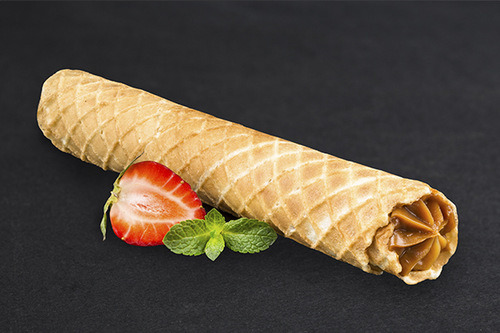

Магазин вафельная трубочка
Закажи обратный звонок Наша компания осуществляет свою деятельность с 2015 года, но небольшой возвраст не мешает нашей продукции добиваться признания на рынке кондитерских изделий в Санкт-Петербурге.
Миссия компании — производство качественной, вкусной и экологически чистой продукции.
Золотистые вафельные трубочки со сладкой ароматной сгущенкой — любимое лакомство многих сладкоежек. Их наполняли самой разной начинкой — от орехов, перемешанных с медом, до различных джемов.
Но самыми популярными были трубочки с вареной сгущенкой. А каждая хозяйка своего очага старалась улучшить рецепт теста для вафель, сделать их более тонкими, поджаристыми, хрустящими.